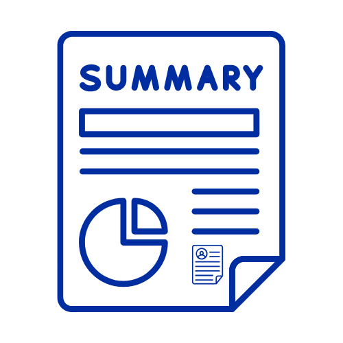

Jae Foster


Professional Summary
- Student Learning Support Officer
- Tutoring Business Owner
- NSW Department of Education (DoE) Scholar
Professional Journey
- Working at DoE as a Student Learning Support Officer.
- Started supporting students through my tutoring business.
- Currently in my third year of University, Studying Secondary TAS Teaching.
- Completed three practicums which includes one rural placement in Armidale.